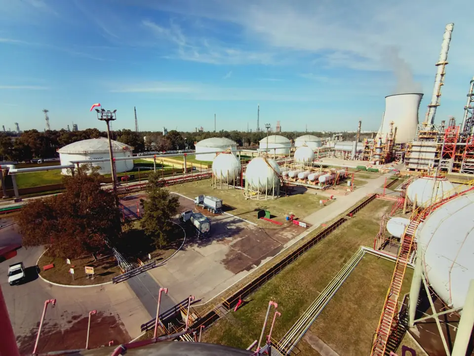
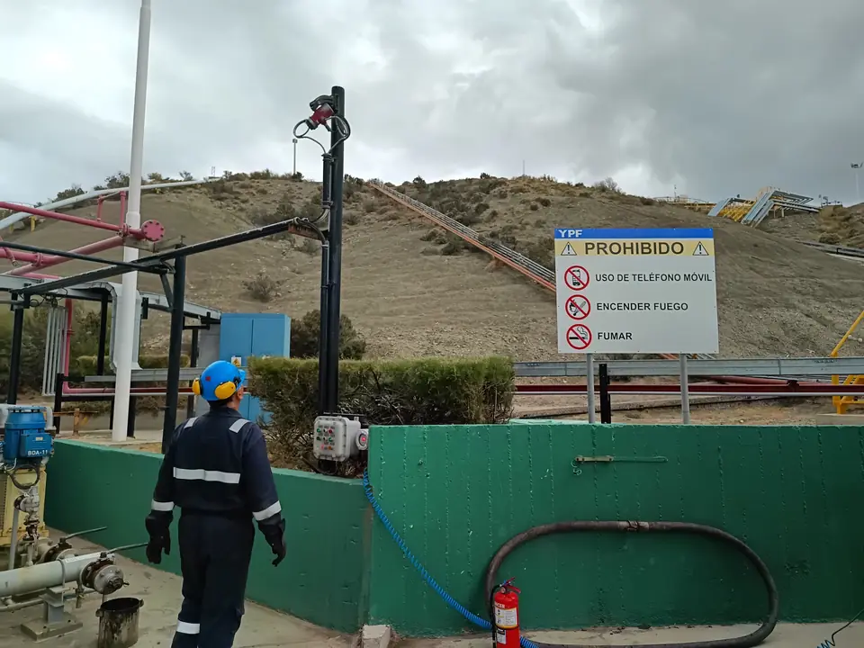
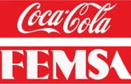
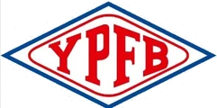
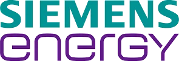
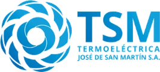
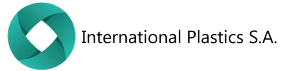
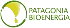

Solidez, experiencia y evolución continua al servicio de la industria
Auditorías de seguridad, inspecciones técnicas y ensayos no destructivos para Oil & Gas, Energía y Minería, en Argentina y países limítrofes.
Más de 15 años de trayectoria
Fundada hace más de 15 años, VEATEC SRL nació con el propósito de brindar soluciones de ingeniería de inspección y auditoría reglamentaria en Argentina. A lo largo de más de una década y media de trayectoria, nos hemos consolidado como un aliado estratégico para los principales operadores de los sectores de Oil & Gas, Energía y Minería.

Garantizar la integridad técnica de los activos y la seguridad de las instalaciones industriales, asegurando el cumplimiento normativo nacional (Secretaría de Energía) e internacional (normas API, ASME, ASTM), y minimizando los riesgos operacionales y ambientales.
Mantenemos un proceso ininterrumpido de crecimiento focalizado en dos pilares: la actualización continua de nuestro equipamiento tecnológico y la retroalimentación constante de nuestras actividades. Operamos desde nuestra sede central en CABA con capacidad de despliegue operativo inmediato a cualquier punto del territorio nacional.
Entendemos que la confiabilidad técnica comienza con la comunicación. Nos caracteriza un intercambio técnico fluido y personalizado con el cliente en cada etapa del servicio, ofreciendo acompañamiento integral desde el diagnóstico inicial hasta la emisión final de certificaciones y recomendaciones técnicas de mantenimiento.
+15 años de experiencia
Brindamos servicio a los principales operadores del sector Oil & Gas, Energía y Minería
Calificación técnica
Nuestros inspectores cuentan con certificaciones reconocidas internacionalmente.
- API 653Inspección de tanques de almacenamiento
- Nivel III · IRAM-ISO 9712Ultrasonido, Partículas Magnéticas y Líquidos Penetrantes
- Nivel II · ISO 9712Emisión Acústica
Empresas que confían en Veatec






Nuestro trabajo en planta